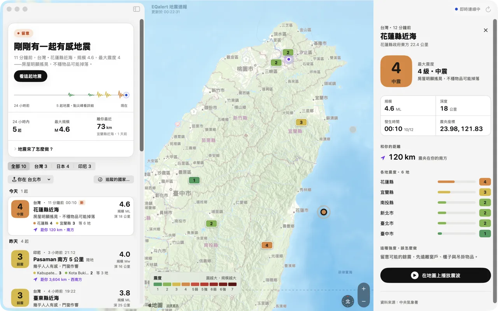

macOS 版・最新版本 {{version}}
平時安心，
有事大聲。
EQalert 把地震資料翻成人話：現在安全嗎？跟我有沒有關係？我該做什麼？台灣發布地震速報時，它會倒數搖晃還有幾秒抵達你的位置。
第一次打開被 macOS 擋下？看安裝說明


01
三種時刻，三種樣子
平常它很安靜，不會用紅色、閃爍嚇你；只有真的需要你注意的時候，它才會大聲。
-
平時
目前沒有地震速報
打開就知道現在的狀態。下面是過去 24 小時的地震紙帶：每一根尖峰都是一起真實的地震，沒有地震時就是一條平平的線。
-
剛剛有感
11 分鐘前，花蓮縣近海，最大震度 4
不用自己查：發生在哪、多強、離你多遠、各地震度多少，再加上「房屋明顯搖晃，不穩物品可能掉落」這種一看就懂的說明。
-
速報來了
30 秒後，搖晃抵達你的位置
達到你設定的條件時，整個畫面切換成警報：倒數秒數、預估你這裡的震度、「趴下・掩護・穩住」三個步驟，加上警報音與語音播報。
02
為 Mac 而做
-
只在需要時大聲
你決定門檻：你這裡的預估震度達到幾級，或規模達到多少，才跳出全螢幕警報。遠方的小地震只會安靜地提示一行。
-
看得見的地震波
P 波與 S 波在地圖上從震央往外擴散。平時也能挑任何一起地震，重播震波怎麼傳到你那裡。
-
各地震度一目了然
點開一起地震，地圖畫出各地量到的震度。日本的震度直接採用日本氣象廳資料，並附上官方報告連結。
-
台灣・日本・印尼
三個國家的地震報告。台灣速報是全螢幕警報加浮動視窗，日本速報是頂部橫幅提醒。
-
常駐選單列
關掉主視窗也會繼續待在選單列監看，速報來時照樣提醒。
-
五種語言
繁體中文、简体中文、English、日本語、Bahasa Indonesia，介面和語音播報都會切換。
你的位置不會離開這台 Mac。定位只用來計算你與震央的距離和倒數秒數；不想開定位，也可以手動選城市。
03
安裝
-
下載並打開 DMG
下載 EQalert {{version}}，打開下載好的
EQalert-{{version}}.dmg。 -
把 EQalert 拖到「應用程式」
在打開的視窗裡，把 EQalert 圖示拖到右邊的「Applications」資料夾。
-
第一次打開：允許執行
EQalert 目前還沒有經過 Apple 公證，所以第一次打開時 macOS 會擋下來。這是正常的，照下面做一次，之後就能直接打開。
macOS 15 以上（Sequoia、Tahoe）
- 在「應用程式」裡打開 EQalert，出現「Apple 無法驗證⋯」的視窗時按「完成」。
- 打開「系統設定」→「隱私權與安全性」，捲到最下面的「安全性」。
- 在「已阻擋 EQalert⋯」旁邊按「強制打開」，輸入密碼，再按一次「強制打開」。
macOS 14 Sonoma
- 在「應用程式」裡對 EQalert 按右鍵（或 Control＋點按），選「打開」。
- 在跳出的視窗裡再按一次「打開」。
會用終端機的話：一行解決
xattr -dr com.apple.quarantine /Applications/EQalert.app -
允許通知與定位
通知用來在速報時提醒你，定位用來估算搖晃抵達的秒數和你這裡的震度。之後可以在「設定」（⌘,）調整提醒門檻、聲音和語言。
04
版本紀錄
你正在用的版本可以在 EQalert 的「設定」最下面看到。